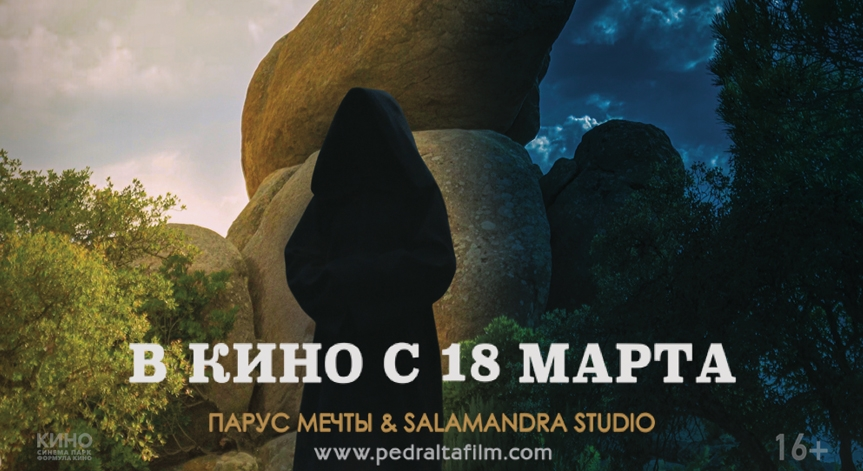
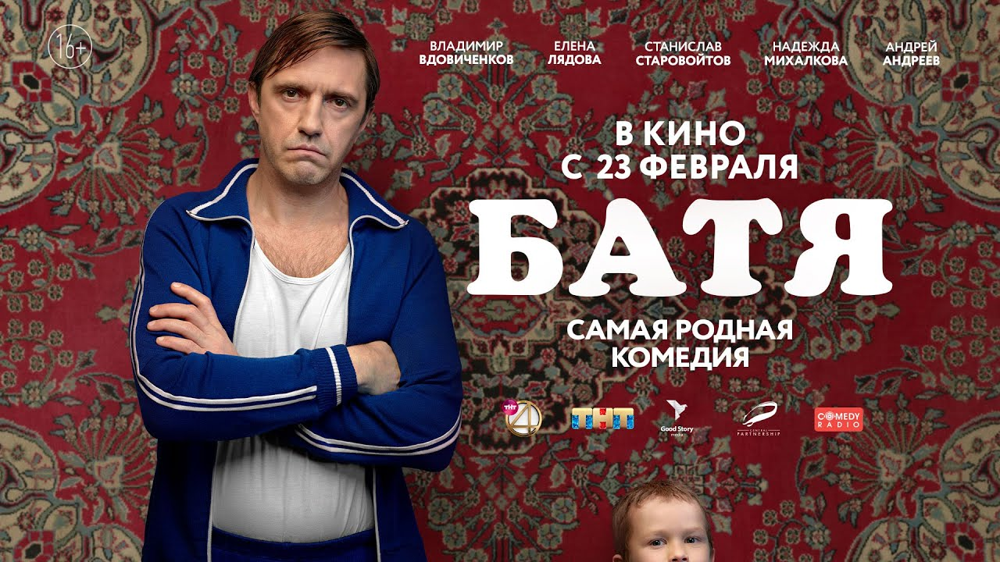
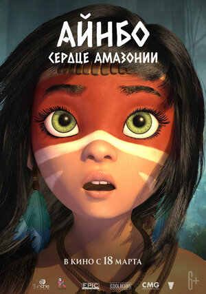

Cinema Diamond
Кинозал оснащен новейшим, современным оборудованием. В нашем кинотеатре большой зал с очень комфортными креслами, не устанешь за два часа просмотра. В помещении нет никакой духоты, работают кондиционеры… в общем создаётся ощущение сказки, где можно полностью расслабиться и насладиться просмотром хорошего фильма.

Тайна миров
Осиротевшей Элизабет выпадает возможность пройти в другой мир к погибшим родителям и сестре. Однако границу миров охраняет всемогущий страж. Поставив своим появлением в параллельной реальности под угрозу существования себя и своих родных, и, не имея возможности вернуться обратно, девушке предстоит понять суть бытия и раскрыть в себе способность изменять окружающий мир по-своему усмотрению.
.jfif)
Том и Джерри
Кайла, работница престижного отеля, где обитает мышонок Джерри, рискующий нарушить ход дорогой свадьбы, нанимает уличного кота Тома, чтобы разобраться с наглым грызуном. Но решить эту проблему не так-то просто.
.jfif)
Райя и последний дракон
В новом волшебном анимационном приключении Disney, действие которого происходит в сказочном королевстве Кумандра, отважная воительница собирает команду единомышленников для того, чтобы отыскать последнего оставшегося в мире дракона, и с его помощью вернуть надежду на победу над могущественным врагом.
.jfif)
Пара из будущего
Недалекое будущее, 2040 год. Евгений и Александра 20 лет в браке, их отношения похожи на высохший урюк. Развестись у них тоже не получается, поскольку в будущем расторжение брака – очень дорогая услуга. Но судьба дает им шанс: Евгений и Александра попадают в прошлое, в тот самый день 20 лет назад, когда влюбленный и юный Женя сделал предложение прелестной Саше. Теперь пара из будущего хочет разлучить самих себя в молодости, но это будет непросто. Молодые будут сражаться за свою любовь.

Батя
История о путешествии взрослого героя к своему Бате, суровому русскому мужику, который стал отцом на заре девяностых и воспитывал своего сына так, как это делали все советские люди.

Айнбо. Сердце Амазонии
Бесстрашная Айнбо родилась и выросла в таинственных амазонских джунглях. Узнав, что её родному поселку грозит опасность, она тотчас отправляется за помощью в компании удивительных зверей. Их ждёт восхождение к пылающему вулкану, встреча с могущественным духом Амазонии и схватка с мифическим чудовищем.